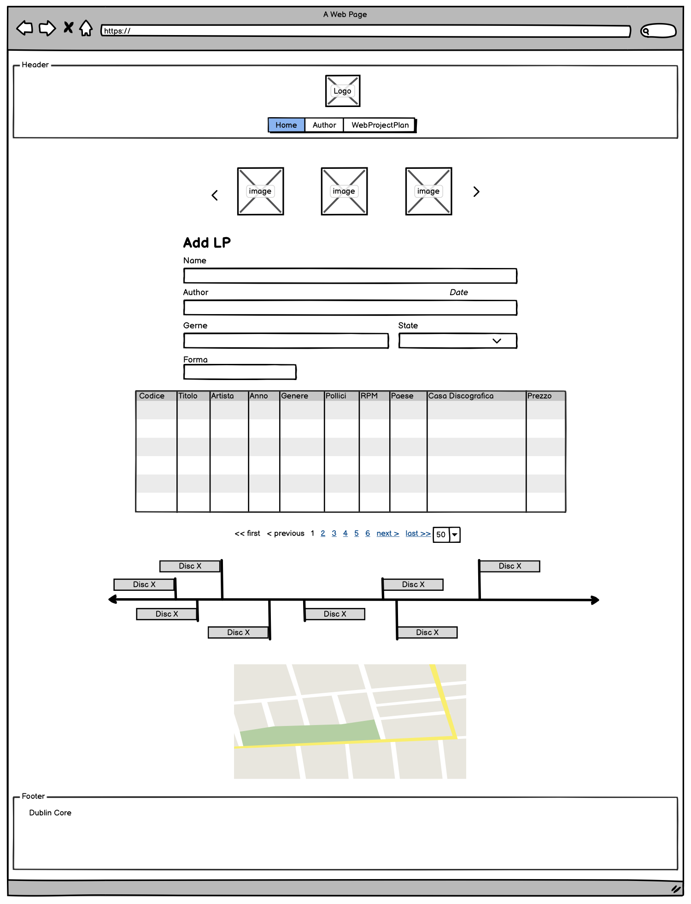
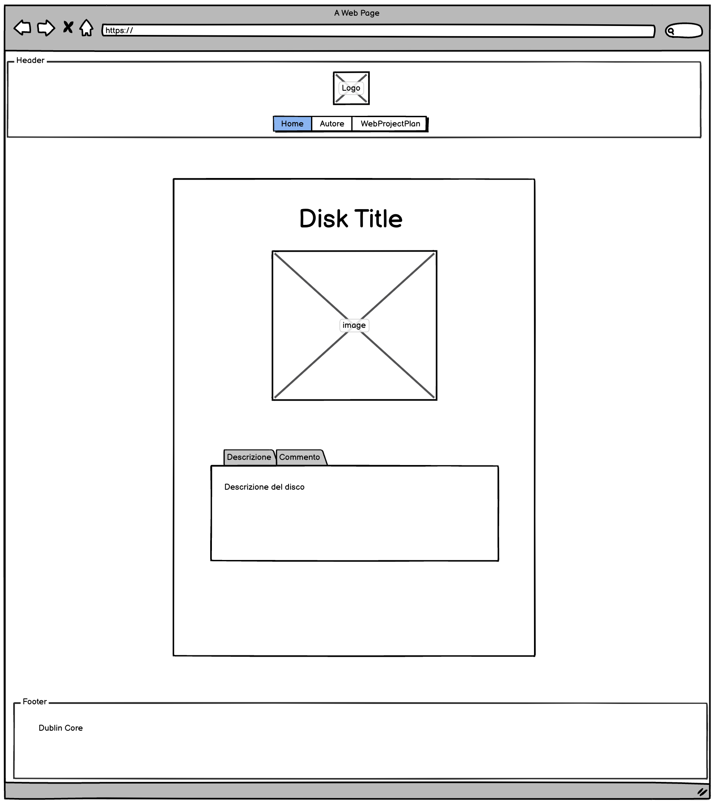

1. Ideazione e Pianificazione (Web Project Plan)
1.1 Definizione dell’Idea
Obiettivo: Creare una libreria digitale per gestire la propria collezione di vinili. L’obiettivo è offrire uno strumento per catalogare, descrivere e organizzare i dischi in vinile, permettendo agli utenti di visualizzare facilmente informazioni come titolo, artista, anno, genere, etichetta e dettagli unici della propria collezione.
1.1.2 Brief (Pianificazione)
-
Finalità e Obiettivi:
- Facilitare la gestione della collezione di vinili tramite un’interfaccia digitale.
- Fornire strumenti per visualizzare e cercare dischi in base a vari criteri.
- Permettere agli utenti di accedere a informazioni dettagliate su ciascun disco.
-
Pubblico:
- Il pubblico principale sono appassionati di vinili che desiderano catalogare la propria collezione. Il progetto è da considerarsi amatoriale e non per i negozianti.
- Con i prossimi aggiornamenti, verrà implementata la possibilità di utilizzare la piattaforma in maniera multiutente. Questa modalità è pensata per le famiglie numerose, con diverse librerie e differenti gusti musicali.
-
Accesso:
- L’accesso è previsto per dispositivi desktop e mobile, con un design responsive per garantire una buona esperienza utente su schermi di diverse dimensioni.
- Saranno inclusi solo contenuti testuali e immagini, per semplificare l’interfaccia.
-
Contenuti e Dati:
- Fonti di dati come informazioni discografiche, biografie degli artisti e descrizioni saranno curate direttamente dagli utenti, ma in futuro si possono esplorare anche API pubbliche per estrarre dati di base (ad esempio, Discogs o MusicBrainz, se permesso).
- Ogni disco includerà informazioni principali: Codice, Titolo, Artista-Gruppo, Anno di pubblicazione, Dimensioni (Pollici e RPM), Paese, Casa Discografica, Prezzo, come meglio indicato nelle prossime pagine.
2. Benchmark
2.1 Selezione dei Progetti di Benchmark
- Discogs : È una delle più grandi piattaforme online per collezionisti di vinili, CD e altri supporti musicali. Offre una catalogazione completa, schede dettagliate di ogni vinile e una comunità attiva di utenti.
- MusicBrainz: Questa è un’enciclopedia musicale aperta e gratuita. Come Discogs, MusicBrainz ha un ampio database e permette una catalogazione precisa. I metadati sono ben strutturati e integrati con informazioni sugli artisti e album.
2.1.2 Analisi di Discogs
-
Punti di Forza:
- Interfaccia e Struttura: Discogs ha un’interfaccia pulita e intuitiva, con sezioni chiare per ogni tipo di informazione (es. artista, album, tracce, edizioni).
- Dettagli Completi per Ogni Disco: Gli utenti possono trovare informazioni dettagliate su ciascun disco, comprese le edizioni, le stampe e i dettagli dell’etichetta.
- Community e Marketplace: Discogs ha una comunità integrata dove gli utenti possono comprare e vendere vinili, rendendo il sito anche un marketplace.
-
Limiti:
- Complessità: L’interfaccia è molto ricca di opzioni, il che può risultare dispersivo per chi vuole solo un sistema semplice di catalogazione.
- Dipendenza dalla Community: Molte informazioni sono generate dagli utenti, il che significa che la qualità e la precisione possono variare.
2.1.3 Analisi di MusicBrainz
-
Punti di Forza:
- Organizzazione dei Metadati: MusicBrainz segue uno standard molto rigoroso per i metadati, assicurando che ogni informazione sia strutturata e facile da trovare.
- Interfaccia Focalizzata sui Dati: Il sito è meno orientato al marketplace e più al catalogo, quindi risulta utile per chi cerca un archivio musicale accurato senza componenti commerciali.
- Integrazione con Altre Piattaforme: I dati di MusicBrainz sono usati da diverse altre piattaforme musicali, rendendolo molto affidabile come fonte.
-
Limiti:
- Interfaccia Minimalista: Sebbene dettagliata, l’interfaccia di MusicBrainz è piuttosto minimalista e potrebbe sembrare meno accattivante per l’utente medio.
- Richiede Conoscenze Tecniche: Gli utenti devono familiarizzare con standard di metadati specifici, che potrebbero risultare complicati per un uso personale.
3. Struttura
3.1 Mappa Concettuale
La mappa concettuale serve per rappresentare le relazioni tra i concetti chiave del sito. Qui delineiamo le principali sezioni del sito e come si connettono.
3.1.1 Elementi della Mappa
- Home: Punto di accesso principale con una panoramica della collezione e collegamenti rapidi.
- Collezione di Vinili: La sezione principale dove vengono elencati tutti i vinili con possibilità di filtrare e ordinare.
- Visualizzazione Singolo Vinile: Pagina dedicata a ogni vinile, contenente dettagli come titolo, artista, anno, etichetta, edizione e note personali.
- Strumenti di Navigazione: Opzioni per navigare attraverso la collezione, come filtri per anno, artista, genere e ricerca per parole chiave.
- Web Project Plan: Documento di progetto accessibile tramite un link di metanavigazione.
La struttura concettuale può essere rappresentata come:
Home → Collezione di Vinili → Vinile Singolo
↳ Filtri e Ricerca
Web Project Plan (metanavigazione)
3.1.2 Schema Gerarchico
Questo schema definisce la gerarchia di navigazione e le dipendenze tra le pagine principali.
- Home:
- Collezione di Vinili:
- Pagina Singolo Vinile
- Filtri e Ricerca
- Collezione di Vinili:
- Web Project Plan (metanavigazione)
3.1.3 Categorie per i Vinili
Ogni vinile può essere descritto attraverso categorie chiave per facilitare l’organizzazione e la ricerca:
- Codice: Identificativo unico per ogni vinile, utile per catalogazione e ricerca.
- Titolo: Il titolo dell’album o del disco.
- Artista-Gruppo: Nome dell’artista o del gruppo musicale.
- Anno di Pubblicazione: Anno in cui il vinile è stato rilasciato.
- Genere: Genere musicale del disco (es. rock, jazz, pop).
- Pollici: Dimensione del vinile (es. 7”, 10”, 12”).
- RPM: Numero di giri al minuto (es. 33, 45).
- Paese: Paese di origine del vinile.
- Casa Discografica: Etichetta discografica che ha prodotto il disco.
- Prezzo: Valore stimato del vinile, utile per collezionisti.
4. Layout
4.1 Architettura delle Pagine
Disegneremo le pagine principali del sito, con particolare attenzione alla visualizzazione dei dettagli dei vinili e alla navigazione. Le pagine principali includeranno:
- Home: Presentazione del sito con link alla collezione e una breve descrizione.
- Collezione di Vinili: Una pagina elenco con una tabella che include i campi principali come Codice, Titolo, Artista, Anno, Genere, ecc.
- Dettagli Vinile Singolo: Pagina con i dettagli completi di ogni vinile selezionato, inclusi tutti i campi specificati.
- Web Project Plan: Una pagina con la documentazione del progetto, accessibile dal piè di pagina o dalla metanavigazione.
4.2 Creazione dei Wireframes
Ecco una descrizione di ciascun wireframe:
-
Home Page Wireframe:
- Testata con titolo del sito e menu di navigazione.
- Carosello con immagini dei vinili della collezione
- Sezione form per inserire nuovi LP
- Tabella/Galleria con l'elenco di tutti i dischi
- Piè di pagina con copiright.

-
Info di Vinili Wireframe:
- Testata con link di navigazione principali.
- Titolo del vinile in primo piano
- Immagine del vinile in primo piano al centro
- Informazioni sul vinile

5. Usabilità
L'usabilità è fondamentale per assicurare che gli utenti possano interagire con il sito in modo efficace e soddisfacente. Gli aspetti considerati includono:
5.1 Architettura dell'Informazione
La struttura chiara, logica e minimale delle pagine aiuta gli utenti a trovare facilmente le informazioni desiderate.
5.2 Aspetto e Tipografia: Colori, Icone e Font
5.3 Colori, Icone e Font
Per rendere l'interfaccia più user-friendly, abbiamo scelto una palette di colori neutri con accenti vivaci che enfatizzano gli elementi interattivi. Questa combinazione crea un design pulito, moderno e facilmente navigabile.
- #f4f4f4 (grigio molto chiaro): Utilizzato come colore di sfondo principale del sito, conferisce luminosità e facilita la lettura dei contenuti.
- #333 (grigio scuro): Impiegato per il testo principale, assicura un alto contrasto con lo sfondo chiaro, migliorando la leggibilità.
- #222 (grigio molto scuro quasi nero): Utilizzato per i titoli e gli header, mette in risalto le sezioni importanti della pagina.
- #fff (bianco puro): Usato per il testo su sfondi scuri e per alcuni elementi grafici, mantenendo un aspetto pulito e minimalista.
- #ff6347 (rosso aranciato "Tomato"): Impiegato per gli elementi interattivi come link e bottoni al passaggio del mouse, aggiunge vivacità e guida l'attenzione dell'utente.
- #ccc (grigio chiaro): Utilizzato per i bordi di input, select e tabelle, definisce le aree senza risultare invasivo.
- #e5533d (rosso mattone): Usato per l'effetto hover su alcuni bottoni, fornisce un feedback visivo all'utente.
- #f9f9f9 (grigio molto chiaro): Applicato come sfondo alternato nelle righe delle tabelle, migliora la leggibilità delle informazioni tabellari.
- #f1f1f1 (grigio chiarissimo): Utilizzato come sfondo per i pulsanti di paginazione, crea una separazione visiva e facilita la navigazione.
- #ddd (grigio medio): Impiegato per l'effetto hover sui pulsanti di paginazione, indicando interattività.
- #f0f0f0 (grigio molto chiaro): Usato come sfondo per le immagini di copertina, riempie eventuali spazi vuoti e mantiene la coerenza visiva.
- #444 (grigio scuro): Utilizzato per i sottotitoli, distingue le diverse sezioni del contenuto.
- #555 (grigio medio-scuro): Impiegato per le icone di controllo del carosello al passaggio del mouse, sottolinea gli elementi interattivi.
Le icone sono state scelte per la loro immediatezza e riconoscibilità, contribuendo a un'esperienza utente fluida. Il font utilizzato è Arial, un carattere sans-serif noto per la sua leggibilità sia su schermi che su carta stampata.
6. Servizi
6.1 Sistemi di Browsing
Per quanto riguarda la navigazione non è stato necessario introdurre sistemi di navigazione come menu, breadcrumb poichè la struttura è molto semplice e l'header funge perfettametne da navigatore, è stata solo utilizzata una paginazione per la tabella dei vinili per evitare che l'elenco fosse troppo lungo e in modo tale da semplificare la navigazione, non si esclude l' introduzione futura di filtri di ricerca.
6.2 Utilities e Tools
Fornitura di strumenti utili agli utenti, come la possibilità di aggiungere nuovi vinili, modificare informazioni e ordinare la collezione.
6.3 Strumenti e Servizi
Integrazione di servizi aggiuntivi come la visualizzazione di grafici o statistiche sulla collezione.
7. Bibliografia
Le fonti utilizzate per lo sviluppo del progetto includono:
- Testi: Le indicazioni per la realizzaizone del progetto sono state fornite su Virutale, dalla professoressa Francesca Tomasi, i vinili fanno parte della collezione dello studente Federico Sgambelluri e le informazioni su di essi sono state reperite da Discogs
- Immagini: Le immagini degli LP sono state reprerite da: Amazon, Apple Music, IBS, Spotfy, Mondadori
- Strumenti: Il codice è stato redatto con l'Editor IntelliJ IDEA, i Wireframe sono stati realizzati utilizzando il sitoo wireframe.cc
- Applicazioni e Componenti: Sono stati utilizzati framework CSS come Bootstrap per la realizzazione del carosello con le imamgini degli LP.
Gli LP che sono presenti al caricamento della pagina sono caricati su un file json, i seguenti dischi che si aggiungono tramite il form invece sono memorizzati nella chache del berowser, visto che la versione gratuita del servizio di hosting utilizzato (GitHub), non permette l'utilizzo di Backend tradizioanli poichè progettato per hostare pagine statiche.
Si chiede scusa per eventuali errori di battitura.